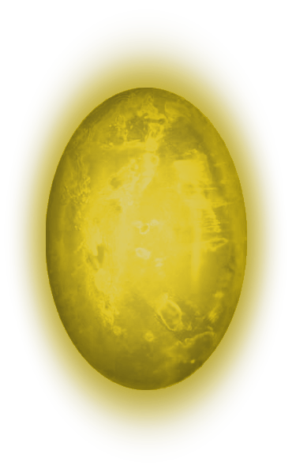

Камень разума

Камень разума
— самый разрушительный среди всех. Камень позволяет увеличивать силу
сознания владельца и получать доступ к мыслям и снам других существ. Поддерживаемый Камнем силы, с его
помощью возможно получить доступ одновременно ко всем существующим разумам. Камень также может выпускать
внутренних демонов, кем бы они ни были в других вселенных, и загонять их обратно.
Камень разума
как проясняется в фильме «Мстители: Эра Альтрона», находился в
Скипетре, использованном Локи в фильме «Мстители». Локи использовал его для подчинения разума людей. После
распада Щ.И.Т. он оказался у барона Штрукера и был использован для наделения силой близнецов Пьетро и Ванды
Максимофф. После нападения Мстителей на базу ГИДРЫ в Заковии Тони Старк овладел камнем и использовал его для
создания Альтрона, позже сам Альтрон, с помощью камня создал Вижена, во лбу которого он и остался. В фильме
«Мстители: Война бесконечности», команда, узнав о Таносе, привозит Вижена в Ваканду, где Шури пыталась
безопасно извлечь камень, но вторгнувшийся Чёрный Орден мешает этому. Затем, после появления овладевшего
всеми остальными камнями Таноса, Ванда уничтожает камень, убивая Вижена. Но Танос перематывает время с
помощью Камня времени, восстанавливая Вижена вместе с камнем, и выдирает камень из лба робота.
 В фильме «Мстители: Финал» Железный человек, Капитан Америка, Человек-муравей и Халк отправляются в 2012 год, чтобы
забрать Скипетр вместе с Тессерактом и Камнем времени. Капитан Америка забирает Скипетр у агентов УДАРа,
прикинувшись членом ГИДРЫ.
В фильме «Мстители: Финал» Железный человек, Капитан Америка, Человек-муравей и Халк отправляются в 2012 год, чтобы
забрать Скипетр вместе с Тессерактом и Камнем времени. Капитан Америка забирает Скипетр у агентов УДАРа,
прикинувшись членом ГИДРЫ.
На главную